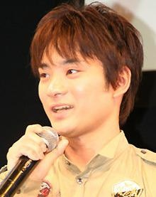

Ryuji Aigase is a Japanese voice actor. His most notable is Hermes from Kino's Journey.
- Gender: Male
- Birthday: July 2, 1987
- Hometown: Aomori, Japan
- Skills: Classic ballet, Tap dancing, Music Theater
| |
Ryuji Aigase is a Japanese voice actor. His most notable is Hermes from Kino's Journey.
|
 |
|---|
 |
Hermes |
|
Hermes is a Brough Superior motorrad who travels around with Kino. He provides the speed for him and Kino to travel anywhere they please. Hermes is naive, innocent and acts childish, but he is quite reliable and a good companion. |